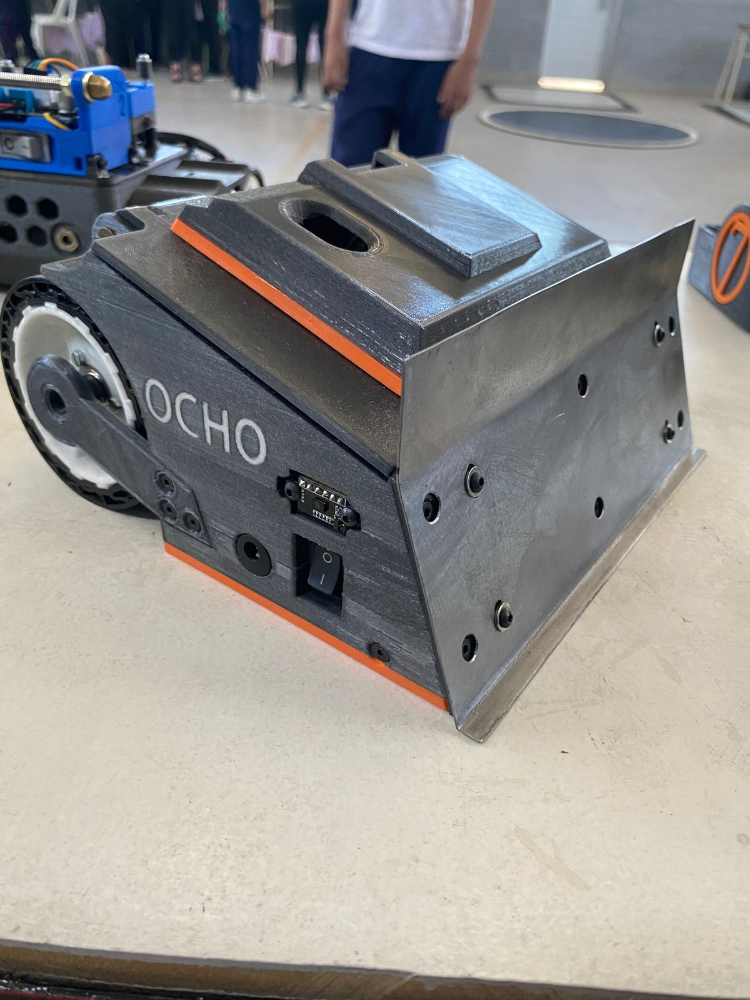
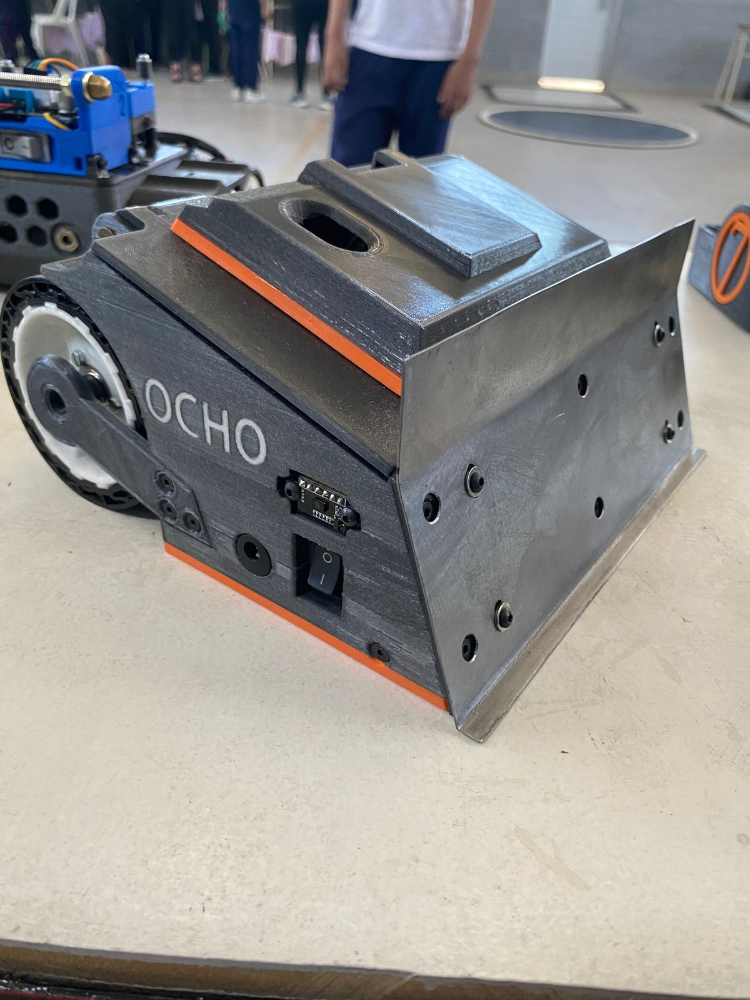
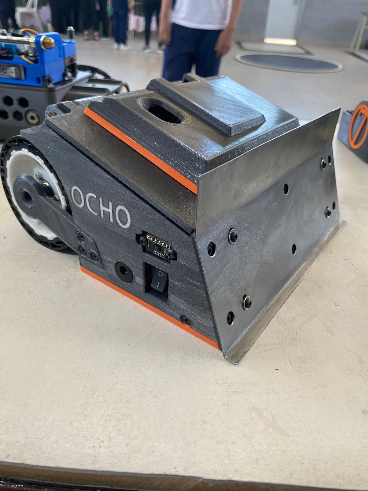

Modelos


 


Explorando nuevas tecnologías para expandir el conocimiento de los alumnos de los estudiantes de informatica.
Este proyecto se enfoca en el desarrollo de nuevas fuentes de informacion, un area donde los estudiantes puedan desarrollar la creatividad mediante una mezcla de mecanica, electronica y programacion. con el objetivo de abrirle las puertas a los estudiantes a un mundo de nuevas posibilidades.
LA ROBOTICA ES UNA CIENCIA Y TECNOLOGIA QUE SE ENCARGA DE DISEÑAR, CONSTRUR Y PROGRAMAR ROBOTS. UN ROBOT ES UNA MAQUINA QUE PUEDE REALIZAR TAREAS POR SI MISMA O CON AYUDA DE UN SER HUMANO. LA IDEA ES QUE LOS ROBOTS AYUDEN A LAS PERSONAS EN ACTIVIDADES QUE PUEDAN SER REPETITIVAS, PELIGROSAS O DIFICILES DE HACER.

El proyecto comenzó como una pequeña iniciativa de parte del profesor de Sist Operativos Eito Mariano y con el tiempo hemos evolucionado y crecido gracias a la colaboración y apoyo de múltiples aliados como el profesor Donato Juan Cruz, pero los avances principales se dieron gracias al aporte de alumnos como Uriel Lopez que se destaco por haber diseñado y creado por si mismo al robot nombrado MARK 5 Hoy en día, seguimos expandiéndonos y explorando nuevas oportunidades.
alumnos como Paula Parreño y Franco Quiroz se complementaron y lograron expandir sus conocimientos para lograr la invension del robot MARK 7. Con el cual tuvieron la grandiosa oportunidad de superar la instancia regional y llegaron gracias a su arduo esfuerzo, paciencia y pasion a competir en el complicado final de la Feria de Ciencia Provincial de 2023 en Mar del Plata